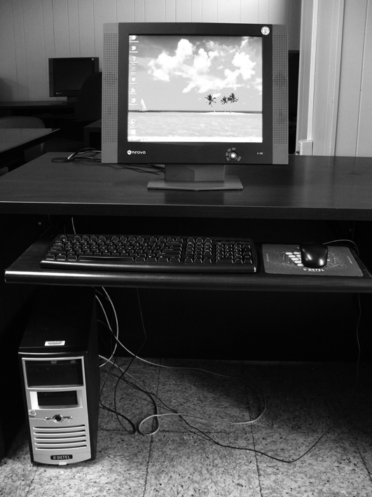
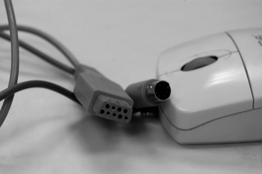
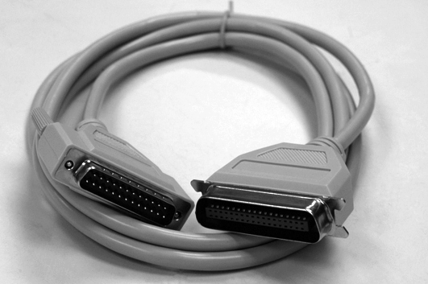

Sistemes informàtics. Unitats funcionals
Els sistemes informàtics permeten un tractament automatitzat de les dades que no seria possible sense aquestes eines. Els éssers humans intentem aprendre del nostre entorn. Mitjançant la comunicació incrementem o modifiquem els coneixements que tenim. Els ordinadors es poden descriure segons les unitats funcionals que els componen, i que en part fan el tractament de la informació i en part permeten la comunicació entre la persona i l’eina informàtica. Es pot considerar la informàtica com una eina per a la comunicació i l’ordinador el mitjà per a aconseguir-ho.
Informació i sistemes informàtics
Contínuament ens arriba informació per diferents canals. Les vies poden ser molt variades: les imatges, els sons, els escrits, els senyals, etc. Si poguéssim mesurar aquest volum d’informació, al final del dia comprovaríem que és molta la quantitat que rebem.
Heus ací dues maneres de definir la informació:
La informació és el resultat de la manipulació de les dades.
La informació és qualsevol forma de representació de fets, objectes, valors, idees…, que permet la comunicació entre persones i l’adquisició del coneixement de les coses.
Tota informació consta de dades o unitats relacionades.
Elements de la informació
La informació està formada per les dades. Les dades s’utilitzen per a produir informació, que ens ajuda a prendre decisions.
Les dades són fets o objectes que no han estat manipulats.
No totes les dades són del mateix tipus. Si pensem en la nostra adreça postal (per exemple, c/ Muntaner, 100, 3r), podem comprovar que hi ha diferents tipus de caràcters. Aleshores, podem classificar les dades segons els tipus següents:
Les dades són tot allò que forma la informació.
Un caràcter és cada un dels símbols que formen part de la informació.
- Numèriques. Formades per nombres (0, 1, … , 9).
- Alfabètiques. Formades per lletres (a, b, … , z).
- Alfanumèriques. Formades per tots els caràcters.
La diferència entre un nombre i un nombre alfanumèric és que amb els alfanumèrics no es poden fer operacions matemàtiques.
Tractament de la informació
La informació ha estat manipulada i tractada de diferents maneres, segons el moment històric i els avenços tecnològics de cada època.
Podem definir el tractament de la informació com el conjunt d’operacions que s’han d’efectuar sobre les dades que componen la informació.
En tot procés de tractament de la informació hi ha d’haver tres elements imprescindibles perquè aquest sigui eficient: l’emissor, el canal i el receptor.
1) L’emissor és el responsable de generar la informació (per exemple, una persona quan parla, un llibre que llegim, etc.).
2) El canal és l’element que permet la transmissió de la informació (per exemple, l’aire quan parlem, el fil de telèfon en les comunicacions telefòniques, etc.).
3) El receptor és l’element que rep la informació (per exemple, en aquest moment, sou vosaltres, que esteu estudiant aquesta unitat didàctica).
Quan es processa la informació es diferencien tres operacions, tal com es pot veure a la taula.
| Operacions | Funcions |
|---|---|
| Entrada | Recollida de la informació |
| Depuració de les dades | |
| Emmagatzematge de les dades | |
| Procés | Aritmètic |
| Lògic | |
| Sortida | Recollida dels resultats |
| Distribució dels resultats |
Les característiques més importants de cadascuna de les operacions que hem indicat són les següents:
Programa
Un programa és un conjunt d’accions executades segons un ordre determinat, que permeten resoldre un problema determinat.
- Entrada. Operació que permet adreçar cap a un lloc determinat la informació que es tractarà (per exemple, quan llegim revistes, llibres…). El procés que segueix és el següent: selecció de la informació, comprovació de la informació i col·locació de la informació en un suport.
- Procés. Operació que permet manipular la informació. Hi ha dos tipus de tractament de la informació: de càlcul matemàtic (sumes, restes…) i d’operacions lògiques (el resultat només pot ser vertader o fals).
- Sortida. Operació destinada a fer conèixer de manera externa els resultats de la manipulació.
D’altra banda, el tractament de la informació no ha estat el mateix al llarg de la història.
Podem diferenciar tres tipus de tractament:
- 
- L'ordinador
- Manual. La manipulació de la informació es fa tota manualment. Per exemple, emplenar un rebut, una factura…
- Mecànic. El tractament de la informació rep el suport de les maquines; ara bé, perquè funcionin, hi ha d’haver una intervenció humana. Per exemple, la calculadora, la màquina d’escriure…
- Automàtic. Cap als anys quaranta, va sortir al mercat un altre tipus de màquines, les màquines automàtiques, que tracten la informació sense la participació de les persones. Per exemple, la màquina automàtica de rentar la roba –en què seleccionem un programa i aquest fa tot el procés de rentat–, els ordinadors…
En el moment en què es comença a utilitzar el concepte de tractament automàtic de la informació, també es comença a utilitzar el terme informàtica.
Els ordinadors
La física, la química, la meteorologia, etc., són ciències que expliquen, que justifiquen determinats fets i situacions del nostre entorn; així mateix, hi ha una ciència, la informàtica, que estudia el tractament de la informació i això és possible gràcies a la utilització, entre altres eines, de l’ordinador.
La informàtica
La informàtica neix amb la idea d’ajudar les persones en els treballs rutinaris i repetitius, generalment de càlcul i de gestió, en què és freqüent la repetició de tasques. La idea és que una màquina pot fer la feina millor, per la seva exactitud i la rapidesa; ara bé, sempre sota el control de la persona.
El terme informàtica va aparèixer a França l’any 1962 sota la denominació de informatique. Aquesta paraula sorgeix de la contracció de les paraules:
INFORmation autoMATIQUE
Posteriorment, va ser acceptada per tots els països europeus; a Espanya, el 1968, amb el nom de informàtica; als països de parla anglesa, es coneix com a computer science.
Computer science és la ciència dels ordinadors.
Una manera de definir aquesta paraula podria ser la que us oferim a continuació:
Les aplicacions informàtiques són un conjunt d’un o més programes informàtics dissenyats per a fer una determinada tasca.
L’explotació d’una aplicació informàtica equival a la utilització d’una aplicació informàtica.
Amb el terme ofimàtica ens referim a la utilització de la informàtica en els departaments de gestió administrativa de l’empresa.
El SO (sistema operatiu) consta d’un conjunt de programes informàtics imprescindibles per al bon funcionament de l’ordinador.
El programari (sofware) és un conjunt d’idees, dades o informacions i accions.
La informàtica és la ciència que estudia el tractament automàtic i racional de la informació.
El concepte d’informàtica inclou tota una sèrie de tasques que es poden fer. Citarem les següents:
- El desenvolupament i la millora de noves màquines, és a dir, de nous ordinadors i dels elements que hi estan relacionats.
- El desenvolupament i la millora de nous mètodes automàtics de treball, que en informàtica es basen en l’anomenat sistema operatiu (SO).
- La construcció d’aplicacions informàtiques, conegudes amb el nom de programes o paquets informàtics.
Podeu veure més dades sobre el programari bàsic i d’aplicació a la unitat “Instal·lació de programari”.
Generalment, s’utilitza l’expressió sistema informàtic per a referir-se de manera més concreta al terme informàtica, en el sentit de conjunt d’elements necessaris per a la realització i utilització d’aplicacions informàtiques.
Un sistema informàtic és el conjunt d’elements necessaris per a la realització i l’explotació d’aplicacions informàtiques. S’hi inclouen els elements de programari, de maquinari i els humans.
En un sistema informàtic hi ha els elements constitutius interrelacionats següents:
- Part física: L’element físic també es coneix amb el nom de maquinari (hardware). Està format per tot allò que es pot veure i tocar en el món de la informàtica (els monitors, les impressores, el ratolí, els suports…).
- Part lògica: L’element lògic es coneix també amb el nom de programari (software). Té el seu origen en les idees (conceptes) i està compost per tot allò que fem servir en el camp de la informàtica que no podem veure ni tocar (els jocs d’ordinador, els programes de comptabilitat, els sistemes operatius…).
- Part humana: L’element humà és l’element més important que forma part de la informàtica o d’un sistema informàtic. Sense les persones que estan al càrrec de la informàtica no hi hauria ni la part física ni la part lògica.
Conceptes bàsics sobre els ordinadors
La informàtica necessita un element físic o mecànic que faci el tractament de la informació automàticament; aquest element s’ano mena ordinador.
Els ordinadors no han nascut en els últims anys. En realitat, les persones sempre han buscat dispositius que els ajudin a efectuar càlculs precisos i ràpids. Des de l’aparició de les calculadores binàries fins als nostres dies, hi ha molt poques activitats humanes que no estiguin lligades d’una manera o altra a les màquines electròniques. Això ens permet definir l’ordinador de moltes maneres. Seguidament, n’indiquem algunes:
- L’ordinador és una màquina formada per una sèrie d’elements físics connectats de manera lògica i racional que tracten la informació automàticament.
- L’ordinador és una màquina electrònica ràpida i exacta que és capaç d’acceptar dades per un mitjà d’entrada, processar-les automàticament sota el control d’un programa prèviament emmagatzemat i proporcionar la informació resultant a un mitjà de sortida.
- L’ordinador és un dispositiu electrònic capaç de rebre un conjunt d’instruccions i executar-les, fer càlculs sobre les dades numèriques i relacionar-les amb altres tipus d’informació per a obtenir un altre conjunt de dades o informació com a resposta.
- L’ordinador és un sistema electrònic que fa operacions aritmètiques i lògiques a alta velocitat d’acord amb les instruccions internes, que són executades sense intervenció humana. A més, té la capacitat d’acceptar i emmagatzemar dades d’entrada, processar-les i produir resultats de sortida automàticament. La seva funció principal és el processament de dades.
Les característiques principals d’un ordinador són les següents:
Processament de dades equival a manipulació.
- Fa una acció a la vegada.
- Pot fer càlculs matemàtics: sumar, restar, multiplicar i dividir.
- Pot fer operacions lògiques, és a dir, comparar lletres i nombres.
- Opera a alta velocitat.
- És exacte i precís –fa exactament el que se li indica.
- És eficient –pot treballar sense parar.
- Té capacitat per a manipular grans quantitats d’informació.
- És fiable –té la capacitat de verificar l’exactitud de les seves operacions internes, és a dir, autocomprovació.
- Pot manipular símbols.
- Cada vegada són més petits, més útils i menys costosos.
El conjunt d’accions que s’ordena i que executa un ordinador es coneix amb el nom de programa.
En general, un programa és un conjunt d’accions que s’han de fer seguint un ordre determinat per a resoldre un problema determinat.
Relacionat amb aquest concepte, tenim el de aplicació informàtica.
Una aplicació informàtica és un conjunt d’un o més programes per a fer un treball determinat en un sistema informàtic.
L’ordinador està format per dos elements fonamentals: l’element físic o maquinari, i l’element lògic o programari, encara que podem trobar-ne d’altres de manera implícita:
- El maquinari (hardware). Fa referència a tot allò que podem veure i tocar (el monitor, el teclat, la CPU…).
- El programari (software). Fa referència als elements que no tenen existència física, com les idees, els conceptes, els programes, les aplicacions…
- L’usuari i el programador. L’usuari és la persona que utilitza l’ordinador, i el programador és la persona que escriu els programes en un determinat llenguatge de programació perquè els ordinadors els puguin executar.
- Les dades i la informació. Les dades són fets o materials originals que no han estat processats. La informació és el producte de les dades ja processades.
- Documentació. És el conjunt d’instruccions o manuals de procediment que ensenyen a l’usuari com ha d’utilitzar l’ordinador i els programes informàtics.
La UCP o CPU (central processing unit) és la unitat central de processament.
A continuació, classificarem els elements físics o dispositius que formen l’ordinador segons les seves funcions:
- Dispositius d’entrada (input)
- Dispositius de sortida (output)
- Dispositius de processament
- Dispositius d’entrada/sortida
- Dispositius de comunicacions (busos)
A la figura, es mostra l’esquema d’un ordinador.
1) Dispositius d’entrada. La seva funció consisteix a permetre l’entrada de dades en l’ordinador. Hi ha molts dispositius que poden fer aquesta tasca: el teclat, el ratolí, l’escàner, el llapis òptic, la palanca de control (joystick), el micròfon, etc.
2) Dispositius de sortida. La seva funció consisteix a treure la informació a l’exterior de l’ordinador. Hi ha moltes màquines que fan aquesta funció, com el monitor o la pantalla, la impressora, els altaveus o el traçador.
3) Dispositius d’entrada/sortida. Són totes les màquines la configuració de les quals els permet fer funcions d’entrada i funcions de sortida. Per exemple, les unitats de cintes magnètiques, les unitats de discos magnètics o les unitats opticomagnètiques. També es coneixen com a memòries auxiliars.
Memòries auxiliars
L’ordinador pot col·locar la informació en uns magatzems electrònics anomenats memòries auxiliars (per exemple, discos magnètics i discos opticomagnètics), d’on la pot recuperar més tard. La CPU no hi té accés directe.
Els dispositius d’entrada, de sortida i d’entrada/sortida també es coneixen com a perifèrics.
Els perifèrics són totes les màquines que han d’estar connectades a la CPU per a funcionar. Aleshores, podem parlar de perifèrics d’entrada (el teclat, el ratolí, etc.), perifèrics de sortida (els monitors, les impressores, etc.) i perifèrics d’entrada/sortida (unitats de discos magnètics, unitats de cintes magnètiques, etc.).
4) Dispositius de processament. També es coneixen com a UCP (unitat central de processament) o, en anglès, CPU (central processing unit). Són la part més important d’un ordinador, en què es manipula la informació. Podem comparar la seva funció a la d’un director d’orquestra. Els dispositius de processament s’encarreguen de coordinar i dur a terme totes les operacions de tipus lògic i matemàtic.
L’esquema de components de la unitat central de processament és el que us mostrem a la figura.
A continuació, detallem les característiques més importants dels components de la CPU:
a) Processador (microprocessador). És el cervell de l’ordinador. Coordina i dirigeix la feina que s’ha de fer en cada moment, i també fa totes les operacions aritmètiques i lògiques. Són els circuits que controlen la interpretació i l’execució de les instruccions. Hi podem distingir dues parts:
- CU (unitat de control). La unitat de control s’encarrega de governar la resta d’unitats, és a dir, interpreta les instruccions i en controla l’execució i la seqüència.
- ALU (unitat aritmètica i lògica). La unitat aritmètica i lògica és on es fan les operacions de càlcul matemàtic i les operacions lògiques.
Operacions de la CPU
Les operacions de la CPU poden ser:
- Lògiques. Totes les operacions en què el resultat pot ser vertader o fals.
- Matemàtiques. Operacions de càlcul matemàtic (per exemple, sumes i restes).
b) Memòria principal. És l’encarregada d’emmagatzemar les dades i els programes mentre s’estan executant en l’ordinador. És important recordar que un programa només pot ser executat per un ordinador. Per tant, cal que el programa i les dades que necessita manipular siguin a la memòria.
5) Dispositius de comunicacions (busos). Enllacen tots els elements del sistema i permeten la comunicació amb el món exterior. El bus representa bàsicament una sèrie de cables que serveixen per a carregar dades en la memòria i, des d’allà, transportar-les a la CPU. És l’autopista de les dades dins del PC, ja que comunica tots els components de l’ordinador amb el processador. El bus es controla i manipula des de la CPU.
Unitats funcionals dels ordinadors
L’estructura bàsica d’un microprocessador està formada pel conjunt de placa base i microprocessador, la memòria i les unitats d’entrada i sortida, i tots aquests elements estan interconnectats per mitjà del bus d’adreces, el bus de dades i el bus de control.
Les principals unitats que formen un ordinador són les següents:
- Unitats d’entrada
- Unitat de processament i emmagatzematge
- Unitat de sortida
- Unitat d’entrada/sortida
Definim com a unitats funcionals de l’ordinador el conjunt d’elements del maquinari imprescindibles per al seu funcionament correcte. Els elements del maquinari es poden classificar segons la funció que tinguin en:
- Unitat central de processament
- Memòria principal
- Unitats d’entrada i sortida
Unitat central de processament
També es coneix amb les sigles UCP (unitat central de processament), o bé CPU (de l’anglès central processing unit). Alguns autors consideren la memòria central com un element més de la CPU per la relació que tenen i per les seves característiques i funcions. En realitat, però, no és així, ja que avui dia la memòria principal no forma part de la CPU.
Tots els elements que formen les unitats funcionals necessiten algun tipus de comunicació per a funcionar correctament; això s’aconsegueix gràcies al bus del sistema.
El bus del sistema és el mitjà de comunicació entre els diferents elements que formen les unitats funcionals.
També, perquè la comunicació entre aquests dispositius i altres màquines sigui eficient, a vegades cal que altres màquines la gestionin. Això és el que fan els anomenats controladors.
Podem veure aquests elements i les relacions que estableixen a la figura, figura i figura.
Aquests elements que constitueixen les unitats funcionals formen part del maquinari; per tant, tenen una part física que podem veure, tocar, etc., i estan formats per circuits electrònics. Els podem estudiar a partir de l’àmbit electrònic o de circuit, o a partir de l’àmbit lògic. Nosaltres els estudiarem des de l’àmbit electrònic.
Controladors
Dispositius que gestionen el funcionament de determinats maquinaris i fan la comunicació entre elements de les unitats funcionals i dispositius perifèrics (per exemple, els monitors, les impressores, etc.).
La memòria principal i els seus elements
La memòria principal també es coneix com a memòria central. Igual que passa amb les persones, la memòria de l’ordinador és capaç de retenir o emmagatzemar dades i instruccions que són accessibles en qualsevol moment.
Abans que l’ordinador manipuli les dades i les ordres mitjançant l’ALU, aquestes es transfereixen a la memòria principal. De la mateixa manera, els resultats obtinguts del procés quedaran emmagatzemats en aquesta memòria.
ALU és la unitat aritmètica i lògica.
La memòria principal o central és el dispositiu electrònic en què estan situades les dades o instruccions que manipularà l’ALU, o els resultats que obtinguin d’aquests tractaments.
La memòria principal té un paper molt important dintre de la unitat central de processament. És un dispositiu totalment electrònic i, per tant, qualsevol informació que contingui és accessible quasi instantàniament. Per això, a vegades, també és coneguda amb el nom de dispositiu d’emmagatzematge d’accés immediat.
Memòria externa (memòria secundària)
La memòria secundària és un dispositiu que permet desar grans quantitats d’informació durant períodes generalment llargs de temps.
D’altra banda, la memòria principal té una capacitat limitada i, en determinats moments, ha tingut uns preus bastant elevats en comparació d’altres elements del maquinari. Per això i per altres factors, aquesta memòria es complementa amb la memòria externa o memòria secundària.
La memòria principal està formada per xips de silici. Els xips són dispositius electrònics formats per circuits integrats.
Circuit integrat
Un circuit integrat és un conjunt de components electrònics amb funcions determinades. Hi ha milers de components electrònics en una integració en miniatura.
Elements de la memòria
La memòria està formada per cel·les o posicions de memòria numerades de manera consecutiva, que tenen la capacitat de retenir la informació mentre l’ordinador està connectat a una font d’energia elèctrica.
Cada cel·la té un nom que s’anomena posició de memòria i un identificador o número d’ordre anomenat adreça de memòria. A la figura, teniu un esquema.
Cel·la de la memòria
Cada posició de la memòria està formada per dispositius electrònics de base binària, de manera que, en cada instant, cada un pot adoptar un dels dos estats binaris: on per a representar l’1 binari, i off per a representar el 0 binari.
Com a conseqüència de tot això, el conjunt complet dels dispositius de dos estats que forma cada posició de la memòria principal proporciona un mètode per a codificar les dades d’una manera semblant al d’un llum encès o apagat.
Cada posició de memòria té una quantitat determinada de bits, de manera que totes les posicions tenen el mateix nombre de bits (per exemple, 8 bits, 16 bits, 32 bits…).
La manera de gestionar cada posició de la memòria, quan es manipula la memòria en operacions de lectura o escriptura, s’anomena paraula.
La memòria principal disposa dels elements següents per a dur a terme les seves funcions:
- registre d’adreça de memòria (RAM)
- registre d’informació o intercanvi de memòria (RIM)
- selector o descodificador de memòria
Analitzem més detalladament cada element:
1) Registre d’adreça de memòria. Abans de fer qualsevol operació de lectura o escriptura en la memòria, s’ha de col·locar l’adreça de la cel·la que s’utilitzarà en l’operació en aquest registre, tant si és per a gravar-hi com si és per a treure’n dades.
2) Registre d’informació o intercanvi de memòria (RIM). Aquest registre rep la informació obtinguda de la lectura de la memòria. Aquest registre ha de contenir la informació que volem escriure i desar en la memòria.
Capacitat de la memòria
A fi de mesurar la capacitat de la memòria principal o central, es fan servir les mateixes unitats que les que hem utilitzat per a la mesura de la informació. Per tant, podem parlar de capacitats de la memòria principal d’uns 512 bytes, 1.024 KB, 32 MB, 64 MB, 128 MB, etc.
3) Selector de memòria o descodificador. Aquest dispositiu s’activa cada vegada que es produeix una ordre de lectura o escriptura. Connecta la cel·la de memòria –indicada per l’adreça del registre d’adreça de memòria– amb el registre d’informació de memòria, la qual cosa fa possible la transferència de dades en un sentit o en l’altre (memòria a RIM, RIM a memòria).
Bàsicament, hi ha tres paràmetres que permeten mesurar la velocitat de resposta d’una memòria:
- Temps d’accés (Ta). És el temps màxim que es tarda a llegir o escriure el contingut d’una posició de memòria.
- Temps de cicle (Tc). És el temps mínim entre dues lectures.
- Amplada de banda (Ab). És el nombre de paraules que es transfereixen entre la memòria i la CPU en cada unitat de temps: Ab = 1 / Tc.
Seqüència de passos per a llegir o escriure una dada en la memòria principal
1) Llegir
Per a llegir una dada se segueixen els passos següents:
a) Es posa l’adreça en el registre d’adreça.
b) Mitjançant el descodificador, s’accedeix a l’adreça de memòria.
c) Se situen les dades en el registre de dades.
2) Escriure
Per a escriure una dada se segueixen els passos següents:
a) Es transfereix l’adreça en què s’escriurà al registre d’adreça.
b) Es transfereixen les dades al registre d’informació.
c) Es descodifica l’adreça de memòria.
d) Es passa el contingut del registre d’informació a l’adreça que conté el registre d’adreça.
Podeu consultar més dades sobre la memòria DRAM a la secció Recursos de Contingut de la web del mòdul, incloent el seu funcionament i els tipus de mòduls existents.
La unitat central de processament
La unitat central de processament (UCP o CPU) és el cervell de l’ordinador. La seva missió és controlar, coordinar i efectuar les operacions del sistema informàtic. Per això, agafa cada una de les ordres del programa que hi ha en la memòria principal, les analitza i interpreta, i dóna les ordres necessàries per a executar-les.
Físicament, està formada per circuits electrònics que en un microordinador es troben integrats en una pastilla o xip denominada microprocessador. Actualment, hi ha diverses empreses que es dediquen a comercialitzar microprocessadors; per exemple: Motorola (família 68xxx), IBM, Apple, Intel (família 8080, 8086, 8088, 80286 –286–, 386, 486, Pentium, Pentium lI, Pentium III, Pentium IV, etc.), Digital (Alpha), CYRIX (família Mx), AMD (família Kx), etc.
El microprocessador és un conjunt de circuits electrònics que estan integrats en un xip.
La unitat central de processament està formada per les unitats que se citen a continuació (vegeu la figura):
- Els registres
- Unitat aritmètica i lògica (ALU)
- Unitat de control (CU)
Els registres
A l’interior del processador hi ha unes zones reservades per a l’emmagatzematge de petites quantitats d’informació. Són els registres interns.
S’anomena registre un conjunt de bits que es manipulen en bloc.
Un registre de 8 bits pot enviar la seva informació a la memòria o a un altre registre. La transferència no és bit a bit, sinó que es passen els 8 bits alhora. Hi ha registres de 4, 8, 16, 32 i 64 bits. Els registres interns d’un processador acostumen a tenir la mateixa amplada.
Podem diferenciar dos tipus de registres interns:
1) Registres interns d’ús general. El processador utilitza aquests registres per a l’emmagatzematge temporal de dades o adreces de memòria; és a dir, la posició de memòria en què s’emmagatzemen les dades. Podem trobar els següents:
a) Registres interns de dades. S’utilitzen per a emmagatzemar dades que el processador sol·licita freqüentment. Un exemple d’aquest tipus de registre és l’acumulador que s’utilitza en les operacions aritmètiques.
b) Registres interns d’adreça. Es pot guardar l’adreça de memòria on es troba la dada. Mitjançant aquest registre podem accedir a posicions contigües de memòria.
2) Registres interns específics. Hi ha registres a l’interior dels processadors que tenen una comesa específica i, per tant, no són d’ús general. Podem indicar els següents:
a) Comptador de programa. Un dels registres que du el control de les instruccions del programa que s’executen és el comptador de programa.
El comptador de programa (program counter, PC) és un registre específic que està pendent de la instrucció del programa que s’executa o la propera per executar.
El processador porta de la memòria la instrucció assenyalada pel PC i la comença a executar. Immediatament, el PC incrementa el seu valor per a preparar-se per a la instrucció següent.
PC, SP, FLAG i IR
PC (personal counter) és un registre específic que apunta cap a la instrucció del programa que s’executa o la propera per executar. SP (stack pointer) és un registre que manté l’adreça d’una dada emmagatzemada a la pila. FLAG (flag register) és un registre que conté informació sobre el resultat de l’última operació efectuada en l’ALU. IR (instruction register) és un registre que manté el codi de la instrucció que s’executa.
b) Punter de pila. Dins la memòria RAM, hi ha una zona destinada a l’emmagatzematge d’informació temporal: és la pila o stack.
El punter de pila (stack pointer, SP) és un registre que manté l’adreça d’una dada que està emmagatzemada en la pila.
El processador pot guardar el contingut dels seus registres interns temporalment, per a recuperar-los més tard, a la pila. El processador accedeix ràpidament a aquesta memòria, ja que el registre punter de pila l’assenyala permanentment. Aquest registre s’incrementa o disminueix automàticament quan s’accedeix a la memòria de pila.
c) Indicador de resultat. Cada bit del registre indicador de resultat (flag register, FLAGS) conté informació sobre el resultat de l’última operació efectuada en l’ALU. El nombre de bits del FLAGS i el seu significat varien d’un processador a un altre.
d) Registre d’instrucció. La unitat de control té una referència permanent de la instrucció en curs mitjançant el registre d’instrucció.
El registre d’instrucció (instruction register, IR) manté el codi de la instrucció que s’executa.
Unitat aritmètica i lògica
Totes les operacions matemàtiques i lògiques que el processador ha d’efectuar es fan en un bloc intern especialitzat anomenat unitat aritmètica i lògica (UAL o ALU, arithmetic logic unit).
La unitat aritmètica i lògica gestiona les operacions elementals de tipus aritmètic (sumes, restes, etc.) i, també, les de tipus lògic (operacions en les quals el resultat és vertader o fals).
Aquesta unitat té dues entrades per als operands i una sortida per al resultat. El processador dirigeix cap a les entrades de l’ALU els registres sobre els quals s’ha d’efectuar l’operació. El resultat apareix a la sortida de l’ALU i es recull en un registre o s’envia al bus.
Molts processadors dirigeixen la sortida de l’ALU (vegeu la figura) cap a l’acumulador.
Un acumulador és un registre en què se situen els resultats de les operacions de càlcul fetes per l’ALU.
Bus és una paraula anglesa que significa ‘transport’. En arquitectura de microprocessadors, un bus pot connectar lògicament diversos perifèrics sobre el mateix conjunt de cables. Aplicada a la informàtica, es relaciona amb la idea de les transferències internes de dades que es produeixen en un ordinador en funcionament. En el bus tots els nodes reben les dades, encara que no es dirigeixin a tots aquests nodes; els nodes als quals no van dirigides les dades, simplement les ignoren. Per tant, un bus és un conjunt de conductors elèctrics en forma de pistes metàl·liques impreses sobre la placa base del computador per on circulen els senyals que corresponen a les dades binàries del llenguatge màquina que opera al microprocessador.
Els primers busos de computadores eren literalment busos elèctrics paral·lels amb múltiples connexions. Avui dia el terme és usat per a qualsevol arranjament físic que proveeixi la mateixa funció lògica que un bus elèctric paral·lel. Els busos moderns poden usar tant connexions paral·leles com connexions en sèrie, i poden ser cablejats en topologia multidrop o en daisy chain, o connectats per cables trenats, com el cas de l’USB.
Hi ha tres classes de busos: bus de dades, bus de direccions i bus de control. Una placa base de tipus ATX té tantes pistes elèctriques destinades a busos com l’amplada dels canals de busos del microprocessador de la CPU: 64 per al bus de dades i 32 per al bus de direccions. L’amplada de canal explica la quantitat de bits que es poden transferir simultàniament. Així, el bus de dades transfereix 8 bytes a la vegada, i el canal de direccions del microprocessador per a una PC-ATX pot “encaminar” més de quatre mil milions de combinacions diferents per al conjunt de 32 bits del seu bus.
1) El bus de dades mou les dades entre els dispositius del maquinari d’entrada –com el teclat, l’escàner, el ratolí, etc.–, de sortida –com la impressora, el monitor o la targeta de so– i d’emmagatzematge –com el disc dur, el disquet o la memòria flaix. Aquestes transferències que es donen a través del bus de dades són governades per diversos dispositius i mètodes, dels quals el controlador PCI és un dels principals. El seu treball equival, simplificant molt, a una central de semàfors per al trànsit als carrers d’una ciutat.
PCI correspon a les sigles angleses de interconnexió de components perifèrics (peripheral component interconnection).
2) El bus d’adreces està vinculat al bloc de control de la CPU per a prendre i col·locar dades en el subsistema de memòria durant l’execució dels processos de còmput. Per al bus d’adreces, l’amplada de canal determina la quantitat d’ubicacions o direccions diferents amb què el microprocessador pot treballar. Aquesta quantitat d’ubicacions resulta d’elevar el 2 a la 32a potència. 2 perquè són dos els senyals binaris, els bits 1 i 0; i 32a potència perquè les 32 pistes del bus de direccions són, en un instant donat, un conjunt de 32 bits.
3) El bus de control transporta senyals d’estat de les operacions fetes per la CPU amb les altres unitats. El mètode que utilitza l’ordinador per a sincronitzar les diferents operacions és un rellotge intern que facilita la sincronització i evita les col·lisions d’operacions (unitat de control). Aquestes operacions es transmeten d’una manera bidireccional.
Aquest tipus d’estructura interna, però, no és aplicable directament al que coneixem actualment com a ordinador personal. En un PC hi ha dispositius controladors d’accés directe a memòria, controladors de disc dur, de tecla, processadors gràfics, memòria RAM en diferents nivells de jerarquia, etc., de manera que trobem una estructura molt més complexa. En aquest sentit, interessa tractar aquesta estructura des del punt de vista del tècnic de manteniment o reparació, tenint en compte el concepte d’unitat mínima reparable. Amb aquest concepte s’entén la part de l’equip que es canvia en cas d’avaria sense intentar reparar-la. Per qüestions de temps de reparació (cost de la mà d’obra) i equips de diagnòstic necessaris, en la majoria dels casos seria més car substituir un component defectuós d’una targeta que comprar-ne una de nova i canviar-la.
Els busos s’utilitzen per a comunicar les diferents unitats funcionals entre elles.
Hi podem trobar els elements següents:
- Circuits operacionals. Circuits necessaris per a fer les operacions amb les dades procedents dels registres d’entrada.
- Registre d’entrada. Emmagatzema dades o operands que intervenen en una instrucció abans de la realització de l’operació per part del circuit operacional.
- Registre acumulador. Emmagatzema els resultats numèrics del circuit operacional. També està connectat als registres d’entrada per a la realimentació, en cas d’operacions encadenades, i té una connexió amb el bus de dades per a enviar els resultats a la memòria central o a la unitat de control.
- Registre d’estat. Registre que emmagatzema algunes condicions de situacions esdevingudes en l’última operació feta i que hem de tenir en compte en les operacions següents.
Unitat de control
La unitat de control (control unit, UC o CU) fa una sèrie d’operacions bàsiques per al funcionament del processador:
- Interpreta les instruccions del programa que arriben de la memòria del sistema.
- Dirigeix els registres adequats cap a l’ALU.
- Controla els busos interns.
- Ordena a l’ALU efectuar l’operació indicada en el programa.
- Porta de la memòria les dades necessàries, i hi envia les dades resultants.
- Gestiona els busos externs de comunicació amb la memòria externa i els perifèrics.
La unitat de control és el centre nerviós de l’ordinador, ja que és on es controlen, es governen i es decideixen totes les operacions. És el cervell que organitza tots els elements interns i externs del processador.
La unitat de control (figura) controla directament el registre d’instrucció IR, el comptador de programa PC, el registre de pila SP i una sèrie de registres ocults a l’usuari, en els quals s’emmagatzemen temporalment instruccions, dades o adreces.
La unitat de control consta dels elements següents:
1) Descodificador d’instruccions. La instrucció que el processador porta de la memòria s’emmagatzema en el registre d’instrucció, IR. Aquest registre està connectat a una unitat anomenada descodificador d’instrucció (instruction decoder, ID). El descodificador és el dispositiu que té com a funció la interpretació del tipus d’instrucció a partir del codi d’operació que hi ha en el registre d’instrucció, i genera els senyals de control que són necessaris per a executar correctament una instrucció.
2) El rellotge o temporitzador. El ritme de funcionament del descodificador d’instrucció el marca un senyal de rellotge. Tots els senyals generats pel descodificador d’instrucció estan sincronitzats amb aquest rellotge per mitjà del bloc seqüenciador. Aquest procés de sincronització s’anomena temporització (timing).
Gràcies a aquesta temporització, les diferents operacions de gestió es fan d’una manera ordenada, sense encavalcar el control ni la informació.
Una de les mesures de velocitat d’un sistema processador la dóna la freqüència de rellotge. Aquesta és una primera aproximació de la velocitat i permet la comparació entre sistemes que utilitzen el mateix processador. La freqüència es pot mesurar en Hz, kHz, MHz, etc. Un Hz equival a un cicle per segon; aleshores, quan es parla d’una freqüència de rellotge de 16 MHz, es parla de 16 milions de cicles per segon. També sabem que T = 1 / F, en què T és el període expressat en segons i F és la freqüència, ja que T = 1 / 16.000.000 = 6,25 · 10–8 s, equivalent a 62,5 ns, que indica la duració d’un cicle.
3) El seqüenciador. És el dispositiu que marca les pautes amb què s’han d’executar les diferents parts de la instrucció en coordinació amb els impulsos enviats pel rellotge.
Arquitectures dels microprocessadors
Els microprocessadors s’han fabricat utilitzant dues tecnologies conegudes amb els noms de CISC i RISC.
1) CISC (complex-instruction-set computing, ‘repertori complex d’instruccions d’ordinador’): la tecnologia més utilitzada en la fabricació dels microprocessadors, que consisteix en la utilització d’un joc d’instruccions complexes que es basen en la implementació d’un gran nombre d’instruccions en el processador per a possibilitar tenir programes més petits i, per tant, més ràpids. Les CPU i les CISC més esteses són de la família 80×86 d’Intel. També són importants les companyies Cirix i AMD, que fabriquen processadors amb el joc d’instruccions 80×86 a un preu més reduït que els d’Intel.
2) RISC (reduced-instruction-set computing, ‘repertori reduït d’instruccions d’ordinador’): en aquesta tecnologia es fa servir un joc d’instruccions reduït, i s’intenta utilitzar el nombre més petit possible d’instruccions. És la més fàcil de dissenyar i té l’avantatge de fer les operacions a més velocitat, a costa d’utilitzar programes més grans. És una tecnologia més simple. Per això permet minimitzar el nombre d’instruccions i la complexitat a l’hora de dissenyar la CPU. Alguns exemples d’arquitectura RISC són l’SPARC, de l’empresa Sun Microsystems, el microprocessador Alpha, dissenyat per Digital, els Motorola 88000 i el PowerPC. Aquest processadors s’utilitzen, principalment, en aplicacions industrials i professionals per la seva gran rendibilitat i fiabilitat.
Llei de Moore
La llei de Moore diu que cada divuit mesos la tecnologia de fabricació dels microprocessadors millora, de tal manera que es podrà duplicar el nombre de transistors integrats en el microprocessador.
Tecnologia de fabricació dels microprocessadors Intel
Normalment, els microprocessadors de l’empresa Intel per a PC han estat dissenyats segons la tecnologia CISC, però actualment s’estan desenvolupant solucions mixtes. Amb les tecnologies actuals, és possible integrar, en l’interior del microprocessador, milions de transistors. Tots aquests transistors s’organitzen en un gran circuit que rep el nom de DIE i que no és més gran de 4 cm2. Aquest circuit està embolcallat per una càpsula de ceràmica o plàstic que el protegeix.
També podem destacar els paràmetres següents en els processadors:
- Un dels paràmetres de fabricació del microprocessador és el nivell d’integració, que en aquests moments utilitza com a unitat de treball el nm (1 nm = 10–9 m). El pas a la tecnologia de fabricació CMOS en 90 nm, la que utilitza actualment el Pentium 4, es considerava impossible no fa gaires anys i, no obstant això, els enginyers ja han aconseguit fabricar-ne en 65 nm; l’any 2007 arribaran als 45 nm, l’any 2009 a 35 nm i, fins i tot, a 20 nm, el límit actual per a aquesta tecnologia.
- Pel que fa a la tensió de corrent, podem dir que la tensió de 5 volts, que es feia servir fins no fa gaire, actualment és de 2 volts, aproximadament, amb la qual cosa s’ha millorat el problema de l’escalfament del microprocessador.
- La placa base proporciona allotjament al microprocessador i a les línies de comunicació amb altres components de l’arquitectura PC. En les plaques, el bus del sistema funcionava a 66 MHz fins no fa gaire, però avui dia ja podem tenir busos de sistema que funcionen per sobre dels 100 MHz (velocitat amb què es comunica el processador amb la memòria principal; a la meitat d’aquesta velocitat, s’accedeix als dispositius PCI connectats). Cal tenir en compte aquesta velocitat del microprocessador, ja que sempre ha de ser múltiple de la velocitat del bus dels sistemes (per exemple, si tenim un processador a 133 MHz i amb un bus de 66 MHz, la velocitat del microprocessador que s’obté, segons el càlcul, és 66 × 2).
- Una de les parts del processador s’encarrega de descodificar les instruccions. Cada instrucció es manipula en registres interns petits que té el microprocessador mateix i, segons la grandària d’aquests registres, el microprocessador tindrà una arquitectura o una altra. Així, el 80286 i el 8086 tenien una arquitectura de microprocessador de 16 bits, perquè cada un dels registres interns tenia aquesta capacitat; la del 386 era de 32 bits i la dels Pentium, de 64 bits.
- Un altre element important que cal tenir en compte en el microprocessador és la memòria cau. La memòria cau que tenen els microprocessadors s’anomena de nivell 1, i la capacitat que té és de pocs KB. Funciona a una velocitat propera a la del microprocessador. Hi ha una altra memòria cau de nivell 2, que generalment és a la placa base (en el cas del Pentium II i Pentium III, és al cartutx, i en el Pentium Pro al microprocessador mateix), i en alguns equips hi ha una tercera memòria cau anomenada de nivell 3.
El nivell d’integració indica l’amplada o l’espai lliure que hi ha entre els diferents elements que formen el microprocessador.
Busos del sistema
Podem definir com a bus del sistema el conjunt de circuits encarregats de la connexió i comunicació entre la CPU i la resta dels elements de l’ordinador. Un bus és un conjunt de cables (pistes de circuit imprès o fils conductors) que proporcionen un camí per al flux d’informació entre els diferents elements que formen l’ordinador. Quan una dada passa d’un component a un altre, viatja al llarg d’aquest camí comú per a arribar al seu destí. Per cada pista o cable, es transmet un bit. Un bloc de bits es pot transmetre fent-los passar tots pels mateix cable (un bit després de l’altre), o bé fent-los passar per diferents cables a la vegada.
Si passen tots pel mateix cable, es diu que hi ha una transmissió en sèrie; si passen per cables diferents, es diu que hi ha una transmissió en paral·lel.
Podeu trobar informació sobre els diferents tipus de sòcols del processador en la secció “Recursos de contingut” del web d’aquest mòdul.
A la figura i figura, teniu un esquema dels busos de comunicació d’un ordinador.
Sèrie i paral·lel
Sèrie: tots els bits passen pel mateix fil un darrere de l’altre. Paral·lel: cada bit passa per un fil diferent i en el mateix moment.
Pel bus, s’han de transmetre diferents tipus d’informació: l’adreça de les dades a les quals volem accedir, la dada per transferir o la informació de control, que permet l’operació amb els diferents elements. Així, segons la funció (i, per tant, el tipus d’informació) que circula pels busos, es poden diferenciar els tres busos següents:
1) Bus d’adreces de memòria. S’encarrega de transportar les adreces de memòria o del perifèric a les quals la CPU vol accedir. L’amplada del bus d’adreces indica la quantitat de memòria a la qual pot accedir un processador. Hi ha processadors amb el bus d’adreces de 16, 20 i 32 bits d’amplada. Amb un bus de 16 bits (16 fils conductors en paral·lel), podem accedir a 2 × 16 = 65.536 posicions de memòria.
Podeu trobar informació sobre l’evolució dels microprocessadors en la secció “Adreces d’interès” del web d’aquest mòdul.
2) Bus de dades. Transporta les dades entre registres. És bidireccional, és a dir, els mateixos fils s’utilitzen per a transmetre informació cap a dintre o cap a fora d’una unitat en instants diferents.
3) Bus de control. Proporciona uns senyals de lectura i escriptura que controlen l’adreça a la qual es dirigeix la dada, que pot anar del processador a la memòria, o bé de la memòria al processador. Els processadors tenen un altre bus de control per a governar els seus registres interns.
A la taula teniu un resum de les característiques principals dels busos d’adreces i de dades segons el tipus de processador.
| Processador | Bus d’adreces (bits) | Bus de dades (bits) |
|---|---|---|
| 8086 | 20 | 16 |
| 8088 | 20 | 8 |
| 80186 | 20 | 16 |
| 80188 | 20 | 8 |
| 80286 | 24 | 16 |
| 80386 SX | 32 | 16 |
| 80386 DX | 32 | 32 |
| 80486 DX | 32 | 32 |
| 80486 SX | 32 | 32 |
| Pentium | 32 | 64 |
| Pentium Pro | 32 | 64 |
A més, podem diferenciar dos tipus de busos segons les parts del sistema que connecten: el bus que connecta la CPU amb la memòria (bus intern o de CPU) i el que connecta la CPU amb la resta d’elements (bus d’expansió), que és una prolongació del bus intern.
- El bus de CPU és interessant pels tipus de memòria que exigeix, ja que es dedica a transferir dades entre la CPU i la memòria. Destaca per la velocitat. Hi ha arquitectures amb velocitats superiors a 100 MHz.
- Però els busos realment interessants són els busos d’expansió. Les diverses arquitectures de les plaques es diferencien bàsicament per les característiques del bus d’expansió. El bus permet intercomunicar el processador, la memòria i els perifèrics, i les seves característiques són decisives a l’hora de determinar-ne les prestacions.
Bus intern i bus extern
Bus intern (de CPU): comunica la CPU i la memòria principal. Bus extern (d’expansió): comunica la CPU i la resta dels components de l’ordinador.
Busos d'expansió
Hi ha dues organitzacions físiques d’operacions E/S que estan relacionades amb els busos:
E/S: entrada/sortida.
1) Bus únic. No accepta un controlador DMA (tot es controla des de la CPU).
DMA (direct memory access) significa ‘accés directe a memòria’.
2) Bus dedicat. Suporta controladors DMA. Tracta la memòria de manera diferent que els perifèrics (utilitza un bus especial), al contrari que el bus únic, que considera posicions de memòria en tots dos. Aquest bus especial dedicat té 4 components fonamentals:
a) Dades. Intercanvia informació entre la CPU i els perifèrics.
Interrupció
Una interrupció és la situació en la qual es para momentàniament l’execució d’una determinada tasca per a executar-ne una altra. Una vegada acabada, es continua amb la primera a partir del punt en què es va deixar.
b) Control. Porta la informació referent a l’estat dels perifèrics (petició d’interrupcions).
c) Adreces. Identifica els perifèrics que ha d’utilitzar.
d) Sincronització. Temporitza els senyals de rellotge.
Podeu trobar més informació sobre el bus PCI en la secció “Adreces d’Interès” del web d’aquest mòdul.
L’avantatge del bus únic és la simplicitat de l’estructura, que el fa més econòmic; però no permet que tingui lloc, a la vegada, transferència d’informació entre la memòria i el processador, i entre els perifèrics i el processador. D’altra banda, el bus dedicat és molt més flexible i permet transferències simultànies, però és més complex i, per tant, els costos són més elevats.
A la taula i taula es presenten algunes característiques dels busos principals.
| Sortida | Denominació | Connectors | Bit dades /adreces | Velocitat de transferència | Nota |
|---|---|---|---|---|---|
| Fast SCSI (SCSI-2) | 8/ | 10 MBps (10 MHz) | * Connecta fins a 8 dispositius. | ||
| Fast wide SCSI (Fast SCSI-2) | 16/ | 20 MBps (10 MHz) | Connecta fins a 16 dispositius. | ||
| Ultra SCSI (Fast-20) | 8/ | 20 MBps (20 MHz) | Connecta entre 4 i 8 dispositius. | ||
| Wide ultra SCSI (Fast-40) | 16/ | 40 MBps (20 MHz) | Connecta 4, 8 i 16 dispositius. | ||
| Ultra2 SCSI (Fast-40) | 8/ | 40 MBps (40 MHz) | Connecta 8 dispositius. | ||
| Ultra2 SCSI (Fast-40) | 16/ | 80 MBps (40 MHz) | Connecta 16 dispositius. | ||
| USB (universal serial bus, ‘bus en sèrie universal’) | 1/ | 1 Mbps a 12 Mbps | Aquest bus ha estat dissenyat per a poder utilitzar-lo amb un gran nombre de dispositius (p. ex.: teclats, palanques de control, ratolins, càmeres digitals, etc.). Suporta plug and play. Permet la desconnexió de dispositius en calent. USB permet connexions de fins a 5 min cada vegada i es poden connectar fins a 127 dispositius. | ||
| ISA (XT) (industry standard architecture, ‘arquitectura estàndard de la indústria’) | 62 | 8/20 | 1 MB/s (5 MHz) | Destinat al processador 8088. Baixa resistència al soroll. | |
| 1984 | ISA (AT) | 62 + 98 | 16/24 | 8 MB/s (8 MHz) | Destinat al processador 80286. Baixa resistència al soroll. |
| Sortida | Denominació | Connectors | Bit dades /adreces | Velocitat de transferència | Nota |
|---|---|---|---|---|---|
| 1987 | MCA (micro channel architecture, ‘arquitectura de microcanal’) | 32/ | 10 MB/s (>10 MHz) | Destinat al processador PS/2 (50,80) d’IBM. Estàndard proposat per IBM. Més resistència al soroll que l’ISA; això els fa més segurs. Incompatible amb ISA. Permet configurar las plaques d’interfície per a aquest bus per mitjà de programari. | |
| 1988 | EISA (extended ISA, ‘ISA estès’) | 32/ | 33 MB/s (8 MHz) | Destinat al processador 80386. Estàndard proposat per Compaq, Tandy, AST, AT&T. Més resistència al soroll que l’ISA. Compatible amb ISA. Permet configurar las plaques d’interfície per a aquest bus per mitjà de programari. | |
| 1993 | VESA (local bus) (Video Electronics Standards Association, ‘Associació d’Estàndards per a l’Electrònica de Vídeo’) | 62 + 98 + 112 | 32/ | 133 MB/s (33 MHz) 148 MB/s (40 MHz) 267 MB/s (50 MHz) | Destinat al processador 80486. Compatible amb ISA. Suporta targetes de vídeo, controladora de discos, targetes de xarxa i targetes de memòria. |
| PCI (V 1.0) (peripheral component interconnect, ‘interconnexió de components electrònics’) | 124 | 32/ | 132 MB/s (<33 MHz) | Destinat al processador 80486DX4 i Pentium. Incompatible amb ISA. Suporta fins a 10 dispositius (interfície de vídeo, discos rígids, xarxes locals, plaquetes per a multimèdia). Suport plug and play. | |
| 1994 | PCI (V 2.0) | 184 | 64/ | 264 MB/s (<33 MHz) | |
| 1997 | PCI (V 2.1) | 64/ | 264 MB/s (<33 MHz) | ||
| 1980 | SCSI (SCSI-1) (small computer system interface, ‘interfície per a sistemes de computació petits’) | 8/ | 5 MBps (5 MHz) | Dóna suport a dispositius com escàners, unitats CD-ROM, DVD, discos Bernoulli, ZIP, etc. Permet la connexió de dispositius (fins a 8) SCSI en forma de cadena, utilitzant el bus per torns. |
La placa base
Quan un usuari amb pocs coneixements d’informàtica compra un equip informàtic nou, generalment avalua la velocitat del microprocessador, la quantitat de memòria RAM instal·lada o la quantitat de GB de disc dur que necessita. Però poques vegades es dóna importància a la placa base (placa mare, principal o motherboard), i amb això cometem un greu error. No té sentit tenir un processador molt ràpid, molta memòria i molta capacitat de disc dur si tot això ho muntem en una placa base antiquada.
La placa base és el component sobre el qual es col·loquen tots els altres. És una placa de circuit imprès en què s’insereixen tots els xips de tots els components. És la placa més gran d’un ordinador. El rendiment general de l’equip dependrà molt del seu disseny i del joc de xips de la placa.
La placa base és l’encarregada d’interconnectar i comunicar tots els components de l’ordinador. La placa base és la base de qualsevol sistema informàtic. De la seva construcció, disseny i qualitat dependrà el bon funcionament del nostre equip informàtic. Disposar d’una placa ben dissenyada i preparada per al futur significa, a més de poder treballar a més velocitat, tenir més possibilitats per a ampliar la memòria, canviar el microprocessador i no patir incompatibilitats amb les noves tecnologies que apareixen.
Suports i unitats d'entrada i sortida
Sabem que perquè la unitat central de processament faci la seva feina cal que la informació que ha de manipular estigui situada en elements físics als quals pugui accedir de manera ràpida i eficient. Aquests elements físics s’anomenen suports de la informació.
El suport de la informació és l’element físic que permet emmagatzemar la informació i les dades de tal manera que l’ordinador hi pugui accedir.
Objectius de tot suport
Emmagatzemar la informació que serà manipulada i tenir la capacitat de desar-la durant períodes de temps més o menys llargs.
Ser un mitjà de comunicació entre els usuaris i l’ordinador, de manera que les dades d’entrada siguin intel·ligibles per a l’ordinador i les dades de sortida ho siguin per a les persones.
Els suports es poden classificar de diverses maneres, però les més utilitzades són les que tenen en compte els criteris següents:
1) Per l’ús que se’n faci:
a) Reutilitzable. Podem fer servir el suport més d’una vegada per a desar informació (per exemple, els disquets, el disc dur, la cinta magnètica…).
b) No reutilitzable. Només el podem utilitzar una vegada per a desar la informació (per exemple, el paper, la fitxa perforada…).
2) Per la forma d’accés a la informació:
a) Seqüencials. Per a accedir a una determinada informació del suport, cal passar per tota la informació anterior (per exemple, les cintes magnètiques).
b) Directes. Permeten accedir a la informació de manera directa o immediata (per exemple, els disquets).
3) Per les característiques físiques del suport:
a) Perforats. Són els que codifiquen i mantenen la informació per mitjà de perforacions en el suport (per exemple, les fitxes perforades de 80 columnes i les de 96 columnes, les cintes perforades…).
b) Magnètics. Mantenen la informació codificada per mitjà de dispositius magnètics (per exemple, els disquets).
c) Òptics. Els continguts d’aquests suports es manipulen mitjançant tècniques especials com la reflexió de la llum (per exemple, el CD-ROM, el DVD…).
d) Altres tipus. Formen part d’aquest grup tots els suports que no podem situar en cap dels grups anteriors i que es limiten a presentar els resultats d’un procés (per exemple, el monitor).
4) Per la seva situació:
a) Locals. El suport està situat en el mateix lloc en què es manipularà.
b) Remots. El suport no està situat en el mateix lloc en què es manipularà la informació, sinó en un altre.
Per a manipular els continguts dels diferents suports informàtics, l’ordinador necessita els dispositius perifèrics, també coneguts com a perifèrics d’entrada i sortida o unitats d’entrada/sortida.
Perifèrics
Tot ordinador, per potent que sigui, necessita comunicar-se amb l’ésser humà, que el programa, li introdueix dades i aprofita els resultats del treball de la màquina.
Un dispositiu perifèric és una unitat capaç de manipular el suport de dades i que permet comunicar l’usuari i l’ordinador.
Com ja hem dit, els perifèrics són dispositius que es fan servir per a comunicar-se amb l’ordinador. Han d’estar connectats a l’ordinador, ja que tots sols no tenen capacitat per a efectuar les funcions per a les quals han estat dissenyats.
En els entorns informàtics, també s’utilitzen altres dispositius per a tasques complementàries. Aquests dispositius no necessiten estar connectats a l’ordinador per a fer la seva feina i són capaços de treballar independentment. Són els dispositius auxiliars. Per exemple, les màquines perforadores de fitxes, les talladores de paper continu…
Dispositius auxiliars
Els dispositius auxiliars no necessiten estar connectats a l’ordinador per a fer la seva feina. Són capaços de treballar independentment.
Com hem fet per als suports d’informació, establirem una classificació dels perifèrics tenint en compte tot un seguit de criteris:
1) Segons la funció
a) Perifèrics d’entrada. La seva funció és l’entrada de dades des de l’exterior fins a la memòria principal de l’ordinador (per exemple, el teclat, el ratolí, l’escàner…).
b) Perifèrics de sortida. La seva funció és treure les dades de la memòria principal a l’exterior (per exemple, el monitor, les impressores, el traçador…).
c) Perifèrics d’entrada/sortida. Són els dispositius capaços de fer les dues funcions anteriors en una mateixa màquina (per exemple, les unitats de discos magnètics, les unitats de cintes magnètiques…).
2) Per la situació que tenen respecte a la CPU
a) Locals Estan situats molt a prop de la CPU.
b) Remots. Estan situats lluny de la CPU; per tant, per a gestionar-los calen sistemes complementaris (per exemple, els encaminadors, els mòdems…).
Els perifèrics no són fàcils ni còmodes d’utilitzar per als processos. D’altra banda, aquests no necessiten conèixer les característiques dels perifèrics, només els intercanvis de dades. Per tant, aquests detalls han d’estar amagats, i així les operacions d’entrada/sortida seran independents del tipus i model del dispositiu.
Generalment, els perifèrics són a l’exterior de l’ordinador, encara que alguns (per exemple, la targeta de so…), es troben a dintre. La transferència d’informació entre el processador i els perifèrics es fa seguint el camí: processador, controlador, bus extern, interfície i perifèric(vegeu la figura).
Interfície processador-perifèric
La comunicació que s’estableix entre el processador i els perifèrics es pot produir per alguns dels camins següents:
1) Registres. Els dispositius es poden connectar al processador per mitjà dels registres dels dispositius, als quals es pot accedir directament en una zona determinada de memòria o, indirectament, per ordre del maquinari que retorna l’estat del dispositiu.
2) Controladors. Els dispositius complexos (discos, etc.) no es connecten directament al processador, sinó per mitjà d’un controlador que conté l’estat del dispositiu, el controla i comprova les dades transferides. El controlador accepta les ordres del processador i s’hi comunica per mitjà de registres com si fos un dispositiu. El controlador, també anomenat unitat de control, pot gestionar diversos dispositius del mateix tipus.
3) Canals. Normalment, els controladors estan connectats al processador per un canal o processador d’entrada/sortida (IOP, input/output processor ). La finalitat d’un canal és aconseguir que els dispositius es tractin com a transparents. Els comandaments manipulen els canals i, quan acaben, el control torna al processador.
Per a tenir una visió tan àmplia com sigui possible dels dispositius d’entrada/sortida, cal que fem referència al controlador.
Els controladors són el programari format per un conjunt de programes i taules que formen part del nucli del sistema operatiu, que executen i controlen totes les operacions d’entrada/sortida sobre qualsevol perifèric connectat a l’ordinador.
A més, el controlador conté la informació que caracteritza cada perifèric connectat a l’ordinador, i uns programes que controlen la gestió pròpia i la de les informacions que circulen en qualsevol sentit. Està situat permanentment en la memòria principal. L’esquema de composició d’un driver s’observa a la figura.
Dispositius d'entrada
Els dispositius d’entrada són totes les màquines que ens permeten introduir informació de l’exterior a la memòria central.
Avui dia, n’hi ha molts que poden fer aquesta funció: els teclats, els ratolins, els escàners…
A la taula, podeu veure les característiques d’alguns perifèrics d’entrada.
| Perifèric | Característiques |
|---|---|
| Teclat | Cinc àrees: teclat alfanumèric, teclat numèric, tecles de funció, tecles del cursor i tecles especials. |
| Ratolí | Els seus moviments es reflecteixen en la pantalla (cursor). Simplifica la selecció de funcions. |
| Palanques de control | Joystick i similars. Principalment per a jocs (3D). De diversos tipus. |
| Escàner | Digitalitza imatges i textos (mitjançant el reconeixement òptic de caràcters). De diversos tipus: de taula de corró i de mà. |
| Pantalles tàctils | Són pantalles que serveixen per a detectar pulsacions pel canvi de temperatura. S’utilitzen en centres d’ús públic. |
| Digitalització d’imatges i so | Són targetes que detecten senyals analògics i els converteixen en digitals. Juntament amb la targeta de so, s’acostuma a incloure un micròfon. |
| Tauletes digitalitzadores i llapis òptics. | Utilitzades per a dibuix i arts gràfiques. Es tracta d’una taula en què es fa el dibuix amb un llapis òptic. El llapis es pot utilitzar independentment com una pantalla tàctil. |
| Càmeres fotogràfiques digitals | Digitalitzen imatges estàtiques. Fan a la vegada els processos de fotografia i escaneig. |
| Minicàmeres de vídeo (webcam) | S’utilitzen d’ençà de l’auge d’Internet. Es poden utilitzar simultàniament amb micròfon i auriculars. |
| Lectors de codi de barres | Detecten l’amplada i la separació de les bandes. Quan llegeixen el senyal accedeixen a la base de dades en què hi ha la informació del producte. |
| Altres | Dispositius per a nens, persones amb discapacitats, de reconeixement de la veu, etc. |
Dispositius de sortida
Formen part del grup de dispositius de sortida tots els perifèrics que tenen com a funció principal visualitzar la informació que hi ha emmagatzemada a la memòria principal.
En podem destacar els següents: els traçadors, les impressores i els monitors.
A la taula podeu veure les característiques d’alguns perifèrics de sortida.
| Perifèric | Característiques |
|---|---|
| Monitor | A més de ser un dispositiu de sortida, permet comprovar les entrades de dades. Les imatges es formen a partir de petits punts de llum (píxels). Com més punts té el monitor, millor qualitat d’imatge obtenim. |
| Impressora | Plasma en paper la informació procedent de l’ordinador. Tipus: de matriu, tèrmiques, d’injecció de tinta i de làser. |
| Traçador | Imprimeix gràfics de gran qualitat. Funciona amb retoladors que es desplacen sobre el paper. |
| Altaveu | Proporciona la sortida d’àudio. N’hi ha de diversos tipus i potències. |
| Sintetitzador de veu | Dóna els resultats d’un programa generant sons similars als de la parla humana. |
Dispositius d'entrada/sortida
La característica principal dels dispositius d’entrada/sortida és que el mateix dispositiu pot actuar com a dispositiu d’entrada en un moment determinat i, en un altre, com un dispositiu de sortida.
Exemples: les unitats de cintes magnètiques, les unitats de discos magnètics, etc.
Aquestes són les característiques d’alguns perifèrics d’entrada/sortida.
Perifèrics d’entrada-sortida
- Cintes magnètiques: són reutilitzables, però no direccionables. Això implica que l’accés és lent.
- Discos magnètics. Poden ser:
- Flexibles: Reutilitzables, direccionables i portables. Discos de plàstic recoberts d’una superfície magnètica. Dividits en sectors. Poca capacitat. Diferents tipus: 3,5 polzades (720 KB a 2,88 MB) o 5,25 polzades (de 360 KB a 1,2 MB).
- Durs: Reutilitzables i direccionables. Normalment, van a dins d’una carcassa. Formats per diverses capes de discos. Des de 20 MB fins a uns quants GB.
- Altres: Discos de cartutxos, Winchester, etc., com els ZIP i els JAZ.
- Discos òptics. Poden ser:
- CD-ROM: Direccionables i portables. La lectura es fa per mitjans òptics. Alta capacitat d’emmagatzematge, barats i segurs. Són els més utilitzats actualment. Diferents tipus: CD-R, CD-RW, etc.
- DVD: Semblants als CD però amb més capacitat (d’aproximadament uns quants GB).
Estructura externa d'un sistema microinformàtic
L’estructura externa d’un equip microinformàtic consta bàsicament de quatre elements (figura) que han de permetre establir la relació directa entre l’usuari del sistema i la CPU:
- Unitat central
- Monitor (element de sortida)
- Teclat (element d’entrada)
- Ratolí (element d’entrada)
Actualment es disposa, també, d’una gran varietat d’altres elements d’entrada-sortida, com ara impressores, altaveus externs, mòdem/encaminador (router), auriculars/micròfon, webcam… (figura).
A la unitat central hi ha les unitats d’emmagatzemament d’informació (disquetera, disc dur, ZIP…), el lector de DVD/CD-ROM, la targeta gràfica, la targeta de so…, a més de la placa base, el microprocessador i la memòria.
Els elements externs a la unitat central es connecten mitjançant els seus respectius cables i connectors. Aquests connectors són, normalment, específics per a cada element, tot i que hi pot haver elements que utilitzin el mateix tipus de connector. Per exemple, el teclat i el ratolí utilitzen un connector de tipus PS/2 i es diferencien l’un de l’altre pel color: verd per al connector del ratolí i violeta per al connector del teclat. Aquests connectors són els següents:
- DIN femella: és de cinc forats i correspon a l’antic connector de teclat estàndard. Actualment no s’utilitza.
- PS/2 femella: és el connector del teclat i el ratolí de tipus PS/2. S’anomena també mini DIN.
- DE-9 mascle: connector de nou pius. És el connector en sèrie RS-232C. S’anomena COM1. Actualment no se sol utilitzar. Era el connector utilitzat en els primers ordinadors per a la connexió del ratolí.
- DB-25 mascle: connector de vint-i-cinc pius. És el connector en sèrie RS-232C. Pot ser també de nou pius. S’anomena COM2 i actualment no es troba pràcticament a cap ordinador.
- DB-25 femella: connector de vint-i-cinc forats. És el connector en paral·lel Centronics o LPT1. S’utilitza per a la connexió d’impressores, tot i que la majoria ja es connecten a l’ordinador mitjançant el connector USB.
- DB-15 HD (alta densitat) femella: sortida de vídeo de quinze forats distribuïts en tres fileres. És el connector de sortida de la targeta gràfica VGA i SVGA.
- DB-15 femella: és el connector de jocs.
- USB: és el connector del bus en sèrie universal.
- RJ11: és el connector de mòdem per a connectar la línia telefònica.
- RJ45: és el connector de xarxa.
- 
- Detall de connectors de ratolí, port en sèrie COM1 i PS2
Actualment no trobarem en cap ordinador connectors del tipus DIN ni del tipus DB-25 mascle (vegeu la figura). I la resta solen estar codificats amb diferents colors. Això pot permetre’ns, en un moment determinat, decidir la viabilitat de poder reparar l’ordinador o no.
- 
- Cable Centronics. Els connectors són: DIN femella, DB-9 mascle, DB-15 HD femella, DB-15 femella i DB-25 mascle i femella; aquests indiquen que es tracta d'un PC molt antic.
A la figura s’observen els connectors típics d’un ordinador actual. Veiem els connectors de tipus PS/2 per a ratolí i teclat (verd i violeta), els connectors USB, RJ45 i diferents tipus de connectors de vídeo i d’àudio. Veiem també que la majoria de connectors segueixen una codificació de colors que facilita la connexió amb l’element corresponent.
En la secció “Adreces d’interès” del web del mòdul trobareu més informació sobre els diferents tipus de connectors.
Aquests connectors ens indiquen que la reparació d’una possible avaria del PC és factible, ja que els elements que cal substituir són fàcils d’obtenir.
L'estructura física d'un equip informàtic
Més enllà del disseny abstracte amb què podem explicar un ordinador, tenim un maquinari comercial que és el que podem trobar a les botigues. Podem anomenar aquest maquinari “real” també l’estructura física d’un equip informàtic.
Cal fer esment, però, que aquesta estructura està basada en un equip informàtic de sobretaula, en què tenim una unitat central (coneguda habitualment com la “torre”) i una sèrie de dispositius que s’hi connecten, com són el monitor, el teclat, el ratolí i altres perifèrics que siguin necessaris per al seu propòsit. Existeixen altres estructures físiques lleugerament diferents segons quina sigui la seva finalitat. Per exemple, un ordinador portàtil té integrat el monitor amb la seva unitat central i el teclat. També un media center pot disposar només com a perifèric d’entrada/sortida d’un comandament a distància, etc.
L’estructura física/funcional fa referència a l’estructura física real en què cadascun dels elements compleix una funció determinada i es poden trobar per separat i subministrats per diferents fabricants. Aquesta estructura es representa a la figura. La unitat central porta associats els elements d’entrada (costat esquerre), els elements de sortida (costat dret) i els elements interns (a sota). S’han representat només els elements més utilitzats per tal que l’esquema sigui tan aclaridor com sigui possible, però en el mercat hi ha molts dispositius que poden connectar-se als ports en sèrie/paral·lel per a l’entrada i sortida de dades.
La placa base o placa mare (mainboard o motherboard, en anglès) porta el sòcol on es col·loca el microprocessador; aquests dos elements són els que defineixen les característiques més importants que pot tenir l’ordinador. De la placa base depenen, a més del microprocessador, tots els elements que s’hi puguin connectar, com ara la memòria RAM, la targeta de vídeo, la targeta d’àudio, la targeta de xarxa, etc.